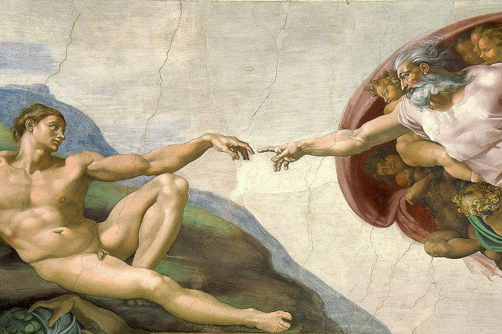

The Italian Renaissance was a period in Italian history covering the 15th and 16th centuries. The period is known for the development of a culture that spread across Europe and marked the transition from the Middle Ages to modernity. The Renaissance began in Tuscany in Central Italy and centred in the city of Florence. The Italian Renaissance has a reputation for its achievements in painting, sculpture, architecture, literature, music, philosophy, science, technology, and exploration. Italy became the recognized European leader in all these areas by the late 15th century.
Religious background
After the destruction of the Roman Empire in the fifth century AD, the Roman Catholic Church rose to power in Europe. As the gatekeepers, their ruling power applied from the king to the common people. In the Middle Ages, the Church was considered to be conveying the will of God, and it regulated the standard of behaviour in life. A lack of literacy required most people to rely on the priest’s explanation of the Bible and laws.
In the eleventh century, the Church persecuted many groups including pagans, Jews, and lepers in order to eliminate irregularities in society and strengthen its power. In response to the Laity’s challenge to Church authority, bishops played an important role, as they gradually lost control of secular authority, and in order to regain the power of discourse, they adopted extreme control methods, such as persecuting infidels.The Roman Church collected wealth from believers in the Middle Ages, such as through the sale of indulgences. The Church accumulated wealth but did not pay taxes, making the Church's wealth even more than some kings.
Outstanding artists of Italian Renaissance
- Leonardo da Vinci
- Michelangelo
- Raphael
- Donatello
- Giotto
- Masaccio
- Botticelli
- Titian